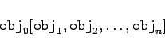
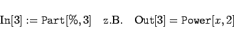

Im System Mathematica werden die Hauptstrukturelemente einheitlich Ausdrücke genannt. Ihre Syntax lautet (es sei nochmals betont, daß die jeweiligen Objekte durch ihr zugehöriges Symbol, also ihren Namen, anzugeben sind):
|  | (20.6) |
Man bezeichnet als  (Kopf) des Audruckes; ihm ist der Index 0 zugeordnet. Die Teile sind die Elemente des Ausdrucks und unter ihren Indices aufrufbar.
(Kopf) des Audruckes; ihm ist der Index 0 zugeordnet. Die Teile sind die Elemente des Ausdrucks und unter ihren Indices aufrufbar.
In vielen Fällen ist der  des Ausdrucks ein Operator oder eine Funktion, die Elemente sind die Operanden oder die Variablen, auf die der
des Ausdrucks ein Operator oder eine Funktion, die Elemente sind die Operanden oder die Variablen, auf die der  wirkt.
wirkt.
Sowohl  als auch Elemente eines Ausdrucks können wieder Ausdrücke sein. Eckige Klammern sind in Mathematica für die Darstellung von Ausdrücken reserviert, sie dürfen nur in diesem Zusammenhang verwendet werden.
als auch Elemente eines Ausdrucks können wieder Ausdrücke sein. Eckige Klammern sind in Mathematica für die Darstellung von Ausdrücken reserviert, sie dürfen nur in diesem Zusammenhang verwendet werden.
| Beispiel |
|
Der Term , der in Mathematica auch in dieser Infix-Form eingegeben werden darf, hat die vollständige Form ( |
Man erkennt an dem Beispiel, daß alle einfachen mathematischen Operatoren in der Präfix-Form existieren und daß die Schreibweise als Term in Mathematica nur eine Vereinfachung ist.
Teile von Ausdrücken können extrahiert werden. Das erfolgt mit der Konstruktion , wobei i die Nummer des entsprechenden Elements ist. Insbesondere wird mit i=0 der  des Ausdrucks wiedergegeben.
des Ausdrucks wiedergegeben.
| Beispiel |
|
Gibt man 
|
Symbole sind in Mathematica die Bezeichner der Grundobjekte; sie können beliebige Folgen von Buchstaben und Zahlen sein und dürfen nicht mit einer Zahl beginnen. Das Sonderzeichen ist zulässig. Es wird zwischen Groß- und Kleinbuchstaben unterschieden. Systemimmanente Symbole beginnen mit einem Großbuchstaben, bei zusammengesetzten Worten beginnt auch der zweite Teil mit einem Großbuchstaben. Der Nutzer sollte deshalb zur Unterscheidung seine selbstdefinierten Symbole nur mit Kleinbuchstaben schreiben.